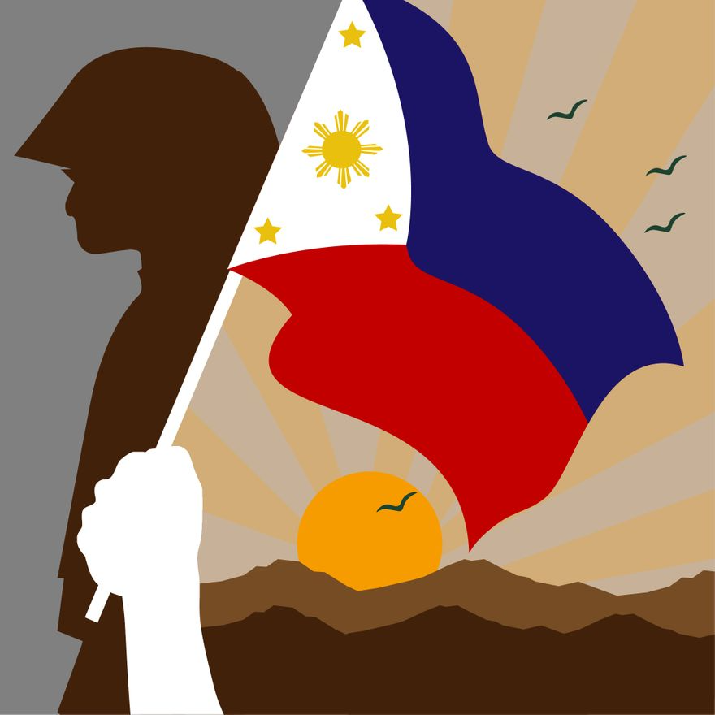

Date: April 9, 2025
What do people do?
Araw ng Kagitingan is a non-working holiday in the Philippines that falls on a long weekend.
On this day, World War II veterans participate in parades across various cities in the country.
While there are smaller parades held in different localities, the main highlight of Araw ng Kagitingan is a speech given by the president at the Mt. Samat shrine in Bataan province.
This speech commemorates the heroism of Filipino and American troops during World War II.
Public Life
Araw ng Kagitingan is a regular holiday in the Philippines, observed on or around April 9.
During this day, many streets are closed, and public transport routes may be redirected to accommodate parades.
Malls and recreational areas typically remain open, allowing families to spend time together and enjoy the day.

Background
The Day of Valor, also known as Araw ng Kagitingan, commemorates the heroism of Filipino and American soldiers during the Japanese occupation of the Philippines in World War II.
On April 9, 1942, Major General Edward P. King of the United States Army was forced to surrender over 76,000 Filipino, Chinese, and American soldiers to the Japanese at dawn.
Following the surrender, the soldiers were subjected to a grueling 90-mile (about 145 kilometers) march to Camp O’Donnell in San Fernando.
Many prisoners died along the way—during what came to be known as the Bataan Death March—due to starvation, dehydration, and disease.
Despite the hardships, the courageous spirit of the captured soldiers endured, and many emerged as heroes from this tragic event.
The surrender of Bataan contributed to the fall of Corregidor, yet it also slowed down the Japanese advance, granting the Allies crucial time to prepare for subsequent battles, such as the Battle of the Coral Sea and the Battle of Midway.
Ultimately, American and Filipino forces liberated the Bataan Peninsula on February 8, 1945.
Initially a national observance, the Day of Valor was transformed into a public holiday by Letter of Instruction No. 1087, issued on November 26, 1980.
This holiday honors the individuals who fought for democracy and freedom in the Philippines during World War II.
Executive Order No. 203, dated June 30, 1987, further formalized April 9 as Araw ng Kagitingan, paying tribute to the heroes of Bataan, Corregidor, and Bessang.
References/Sources